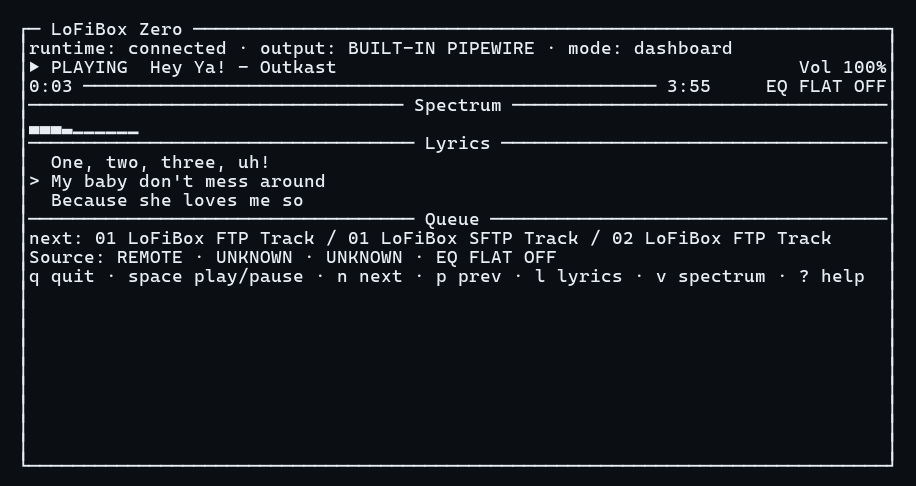
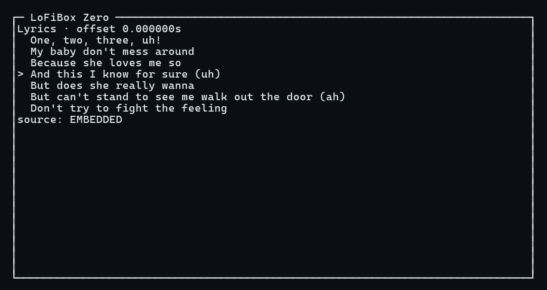
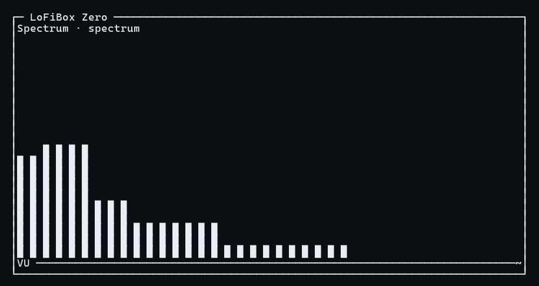
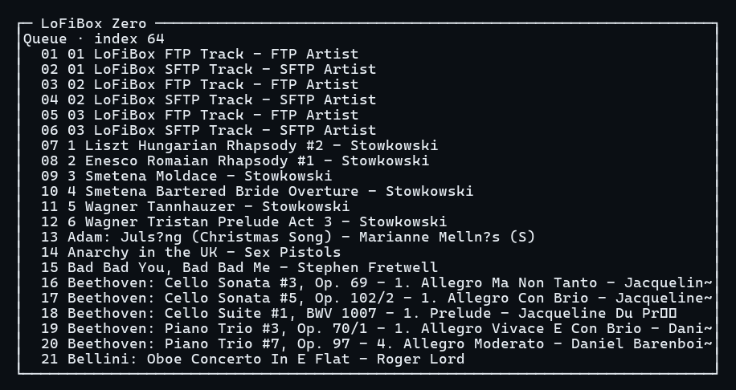

Terminal UI
TUI: Native Terminal Product Interface
LoFiBox TUI is designed for SSH, Linux desktop terminals, headless servers, small Linux devices, and developer/creator workflows.
Launch Modes
lofibox tui
lofibox tui dashboard
lofibox tui now
lofibox tui lyrics
lofibox tui spectrum
lofibox tui queue
lofibox tui eq
lofibox-tui --theme amber --charset unicodeDashboard
Dashboard is organized as Header / Now Playing / Progress / Spectrum + Lyrics + Queue / Source + EQ + Diagnostics / Footer. It reads runtime snapshots and event streams; it does not access the audio backend, lyrics provider, or library scanner directly.

Lyrics
Lyrics mode focuses on scrolling lyrics. Synchronized lyrics highlight the current line, while plain lyrics fill the visible window. When lyrics are missing, it shows embedded, local .lrc, and online-provider source status.

Spectrum
Spectrum mode uses the runtime visualization projection. The default display has 10 bands and can expand to 16/32 bands, bars, waveform, VU meter, peak hold, and decay.

Queue
Queue mode displays the active queue, active index, title, artist, duration, and source label. Selection, jump, delete, and move actions map back to runtime commands.

Character Sets and Themes
| Setting | Command | Description |
|---|---|---|
| Unicode Rich | lofibox tui --charset unicode |
Default mode with box drawing, spectrum blocks, and playback symbols. |
| ASCII Safe | lofibox tui --charset ascii |
Compatibility mode using + / - / | and # progress bars. |
| Minimal | lofibox tui --charset minimal |
For very narrow or log-like environments, keeping only core state and necessary prompts. |
| Themes | --theme dark|light|amber|mono --no-color |
Color is enhancement only; no-color mode must remain fully usable. |
Responsive Layouts
TUI switches layout by terminal size and shows an explicit error below 32x8.
| Layout | Size | Focus |
|---|---|---|
| Wide | >= 100x30 | Spectrum / Lyrics / Queue in three columns. |
| Normal | >= 80x24 | Now Playing, progress, Spectrum, Lyrics, Queue sections. |
| Compact | >= 60x16 | Status, progress, spectrum, current lyric, next track. |
| Micro | >= 40x10 | Title, time, volume, short spectrum, current lyric. |
| Tiny | >= 32x8 | Title, time, short spectrum, exit hint. |
Keyboard Shortcuts
| Key | Action | Runtime Mapping |
|---|---|---|
| Space | Play / pause | PlaybackToggle |
| n / p | Next / previous | QueueStep(+1/-1) |
| s | Stop | PlaybackStop |
| Left / Right | Seek -5s / +5s | PlaybackSeek |
| e | Toggle EQ | EqEnable / EqDisable |
| l / v / Q | Lyrics / Spectrum / Queue view | TUI local focus |
| / | Search mode | Runtime query |
| : | Command Palette | Controlled runtime command, not shell execution |
| q | Quit TUI | Closes the interface only; does not send stop |